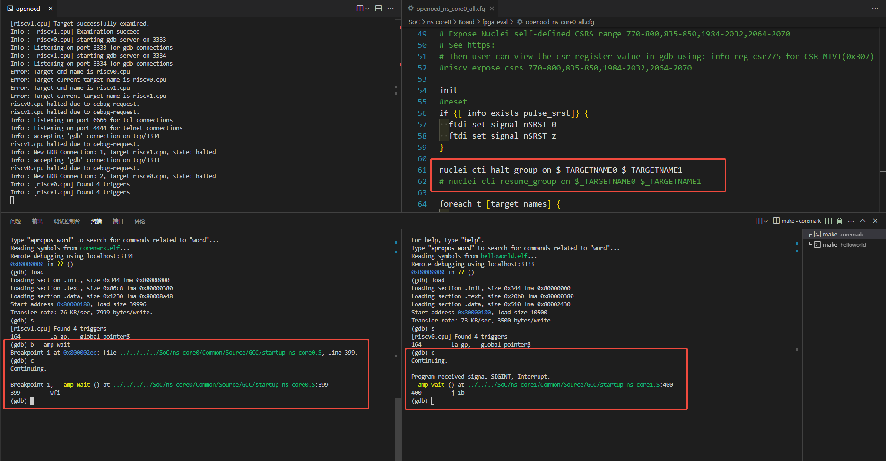
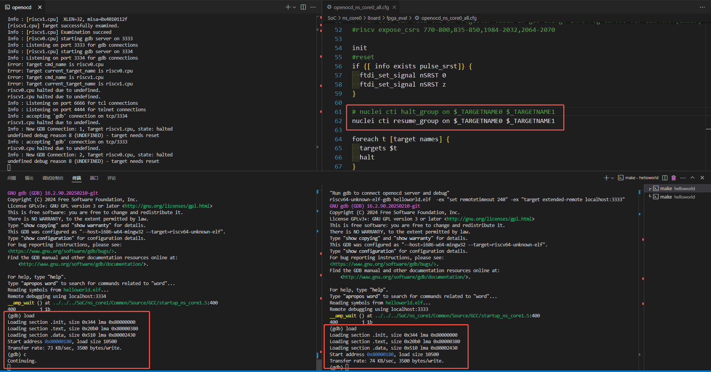
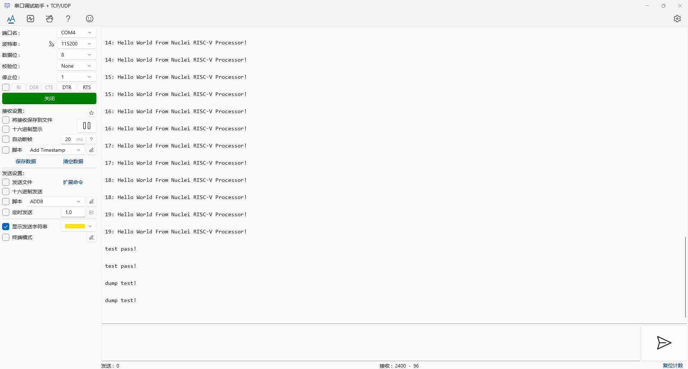
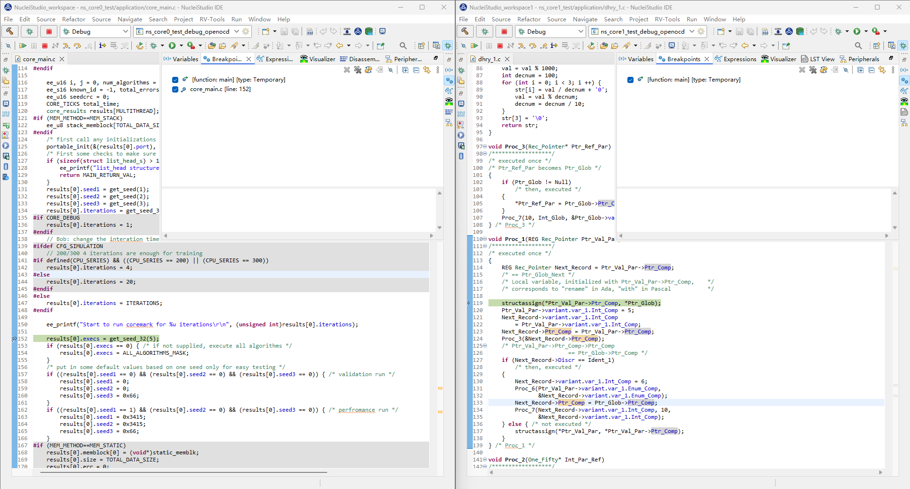
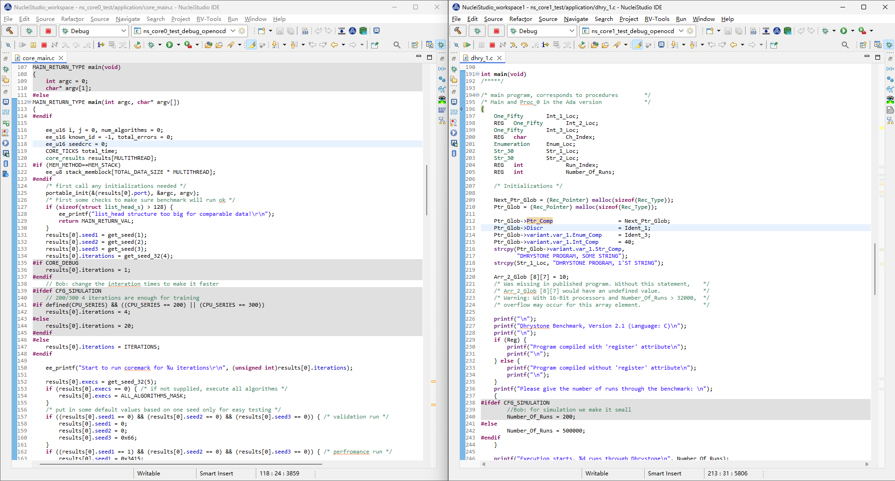
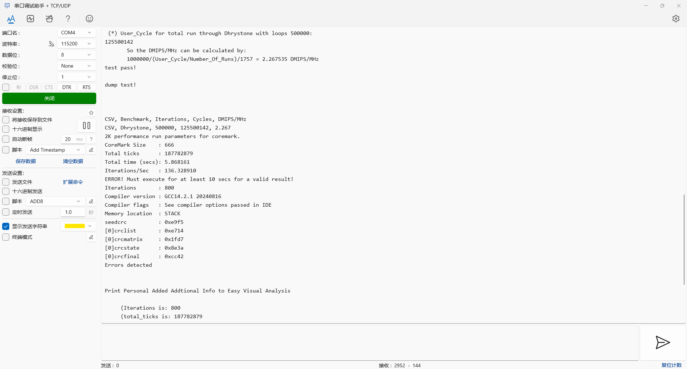

OpenOCD 中 Nuclei 交叉触发功能使用指南¶
功能概述¶
为满足 AMP 多核调试中同步暂停(halt)与恢复(resume)的需求，Nuclei RISC-V CPU实现了 cross-trigger 功能，OpenOCD 已集成以下两种同步控制功能：
- 同步暂停组 (halt_group) - 组内任一核暂停时，其他成员自动同步暂停
- 同步恢复组 (resume_group) - 组内任一核恢复运行时，其他成员自动同步恢复
基本命令格式：
# add target to halt_group
nuclei cti halt_group on $_TARGETNAME0 $_TARGETNAME1
# remove target from halt_group
nuclei cti halt_group off $_TARGETNAME0 $_TARGETNAME1
# add target to resume_group
nuclei cti resume_group on $_TARGETNAME0 $_TARGETNAME1
# remove target from resume_group
nuclei cti resume_group off $_TARGETNAME0 $_TARGETNAME1
配置文件示例¶
1. 同步暂停组配置¶
adapter_khz 1000
interface ftdi
ftdi_vid_pid 0x0403 0x6010
ftdi_oscan1_mode off
transport select jtag
ftdi_layout_init 0x0008 0x001b
ftdi_layout_signal nSRST -oe 0x0020 -data 0x0020
ftdi_layout_signal TCK -data 0x0001
ftdi_layout_signal TDI -data 0x0002
ftdi_layout_signal TDO -input 0x0004
ftdi_layout_signal TMS -data 0x0008
ftdi_layout_signal JTAG_SEL -data 0x0100 -oe 0x0100
set _CHIPNAME0 riscv0
jtag newtap $_CHIPNAME0 cpu -irlen 5 -expected-id 0x10900a6d
set _TARGETNAME0 $_CHIPNAME0.cpu
target create $_TARGETNAME0 riscv -chain-position $_TARGETNAME0 -coreid 0
set _CHIPNAME1 riscv1
jtag newtap $_CHIPNAME1 cpu -irlen 5 -expected-id 0x10900a6d
set _TARGETNAME1 $_CHIPNAME1.cpu
target create $_TARGETNAME1 riscv -chain-position $_TARGETNAME1 -coreid 0
init
#reset
if {[ info exists pulse_srst]} {
ftdi_set_signal nSRST 0
ftdi_set_signal nSRST z
}
# 添加目标到暂停组
nuclei cti halt_group on $_TARGETNAME0 $_TARGETNAME1
foreach t [target names] {
targets $t
halt
}
2. 同步恢复组配置¶
adapter_khz 1000
interface ftdi
ftdi_vid_pid 0x0403 0x6010
ftdi_oscan1_mode off
transport select jtag
ftdi_layout_init 0x0008 0x001b
ftdi_layout_signal nSRST -oe 0x0020 -data 0x0020
ftdi_layout_signal TCK -data 0x0001
ftdi_layout_signal TDI -data 0x0002
ftdi_layout_signal TDO -input 0x0004
ftdi_layout_signal TMS -data 0x0008
ftdi_layout_signal JTAG_SEL -data 0x0100 -oe 0x0100
set _CHIPNAME0 riscv0
jtag newtap $_CHIPNAME0 cpu -irlen 5 -expected-id 0x10900a6d
set _TARGETNAME0 $_CHIPNAME0.cpu
target create $_TARGETNAME0 riscv -chain-position $_TARGETNAME0 -coreid 0
set _CHIPNAME1 riscv1
jtag newtap $_CHIPNAME1 cpu -irlen 5 -expected-id 0x10900a6d
set _TARGETNAME1 $_CHIPNAME1.cpu
target create $_TARGETNAME1 riscv -chain-position $_TARGETNAME1 -coreid 0
init
#reset
if {[ info exists pulse_srst]} {
ftdi_set_signal nSRST 0
ftdi_set_signal nSRST z
}
# add target to resume_group
nuclei cti resume_group on $_TARGETNAME0 $_TARGETNAME1
foreach t [target names] {
targets $t
halt
}
命令行验证步骤¶
1. 同步暂停组验证¶
- 配置文件中已添加目标到
halt_group - 为两个核心分别加载不同固件
- 仅在 core0 的
__amp_wait()函数设置断点 - 执行流程：先恢复 core1，再恢复 core0
- 验证结果：当 core0 触发断点暂停时，core1 同步暂停

2. 同步恢复组验证¶
- 配置文件中已添加目标到
resume_group - 为两个核心加载相同 helloworld 固件
- 仅向 core0 发送继续运行命令：
- 验证结果：串口输出显示两个核心同时运行


IDE 验证步骤¶
1. 同步暂停组验证¶
- 配置文件中已配置
halt_group - 为两个核心加载不同固件
- 在 core0 的
core_main.c第 152 行设置断点 - 操作顺序：
- 先启动 core1 运行
- 再启动 core0 运行
- 验证结果：core0 触发断点时，core1 同步暂停

2. 同步恢复组验证¶
- 配置文件中已配置
resume_group - 为两个核心加载不同固件
- 仅启动 core0 运行
- 验证结果：串口输出显示两个核心同时运行

